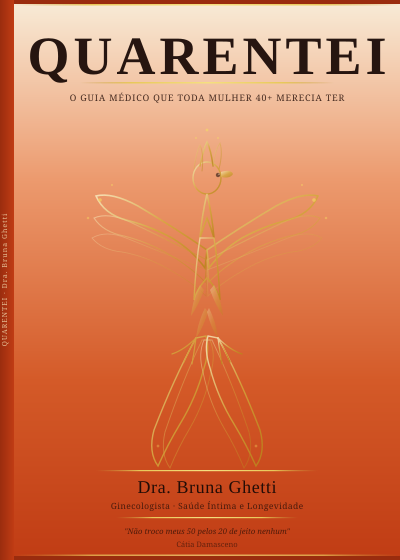
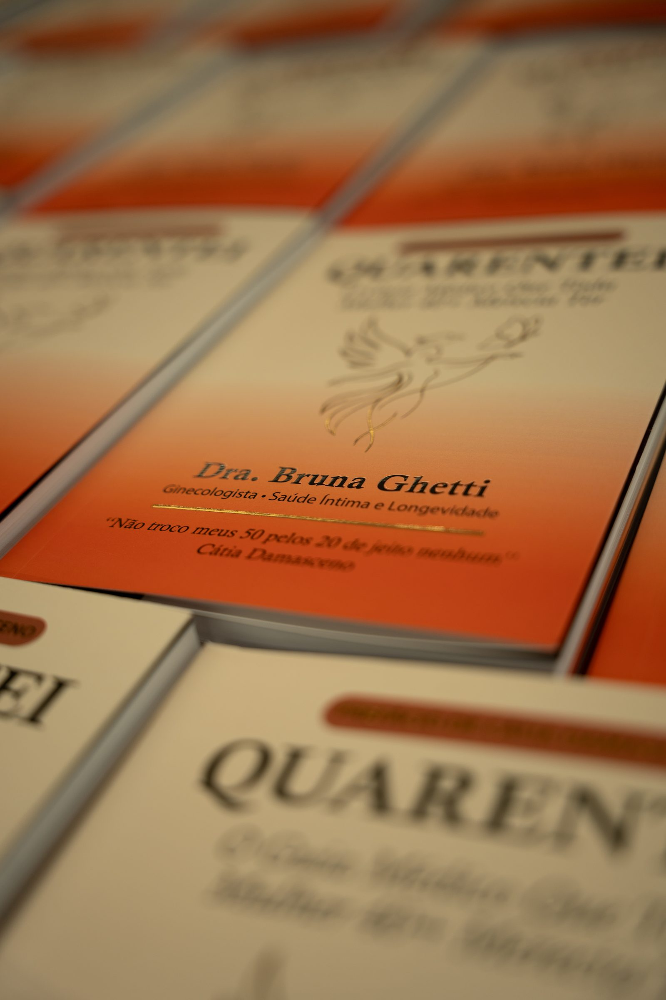

Lançamento · E-book exclusivo
O guia médico que toda mulher 40+
merecia ter em mãos.
Você está nos seus 40+ e sente que algo mudou. No corpo, na energia, no desejo, na forma como se vê. Este livro foi escrito para você. Com verdade médica, ciência real e profundo acolhimento.
"Dra, eu já não me reconheço mais
no meu próprio corpo."
Peso que muda sem você ter mudado nada
Cansaço que não passa nem com descanso
Libido que foi embora sem avisar
Irritabilidade e humor oscilando sem motivo
Sono que não restaura — acorda mais cansada
Sensação de não se reconhecer mais
O mais difícil não é o sintoma em si. É a sensação silenciosa de perder o controle do próprio corpo.
Foi exatamente por isso que o QUARENTEI nasceu.
Os 40+ não são o fim de nada. São o início de uma relação mais honesta, mais profunda e mais consciente com o seu próprio corpo. Desde que você tenha as ferramentas certas e uma voz médica que fale com você, não sobre você.
Conhecer o guia
"QUARENTEI nasce como um convite profundo: olhar para si, entender seu corpo, acolher suas fases e viver os 40+ com mais consciência, liberdade e autoestima."
Foram anos escutando mulheres. Suas dores, conquistas e recomeços. E em cada história, um ponto em comum: o quanto nos esquecemos de nós mesmas.
Este livro é um convite para se olhar com mais verdade, mais presença, mais cuidado. Porque se priorizar não é excesso. É necessidade.
Conhecimento médico em linguagem real. Sem jargão, sem julgamento, sem tabus. Com a profundidade que você merecia ter encontrado antes.
Mudanças hormonais dos 40+ explicadas de forma clara. Por que você se sente diferente e o que isso significa de verdade.
Reposição hormonal, exames essenciais, sinais de alerta e como ter uma conversa produtiva com seu médico.
O assunto que ninguém fala, abordado com cuidado, ciência e total ausência de julgamento.
Por que seu corpo responde diferente agora e estratégias reais para recuperar sua vitalidade.
Se reencontrar, se reconhecer e se priorizar sem culpa. A parte que mais toca as leitoras.
Estratégias de prevenção e qualidade de vida para os próximos anos com protagonismo.
Ginecologista · Especialista em Menopausa e Saúde Feminina
Referência em Cuiabá em tratamentos integrados de saúde feminina, a Dra. Bruna atua com uma abordagem que une ginecologia, equilíbrio hormonal e escuta real. Porque acredita que cuidar de uma mulher vai muito além de tratar sintomas.
Ao longo de anos de consultório, um padrão se repetia: mulheres extraordinárias chegavam sem entender o que estava acontecendo com elas. Carentes de informação. Carentes de acolhimento. Carentes de uma voz que falasse com elas, não sobre elas.
O QUARENTEI é a resposta para essa lacuna. Cada página foi escrita com a mesma intenção de cada consulta: devolver à mulher o protagonismo sobre a própria saúde.
"Afinal, quando uma mulher se redescobre, o mundo ao redor floresce."
Dra. Bruna GhettiVocê se reconhece em pelo menos uma dessas situações?
Finalmente alguém que fala sobre o que a gente vive de verdade. Depois de ler, fui à consulta com muito mais clareza. Me sinto protagonista da minha saúde de novo.
Chorei lendo porque me senti vista pela primeira vez. Não sabia que tantas das minhas queixas tinham uma explicação e, mais do que isso, uma solução.
Recomendei para minha irmã e minha mãe. É o tipo de livro que toda mulher precisava ter aos 38. Informação que salva e que ninguém nos dá de graça.
Depoimentos ilustrativos. Substitua pelos relatos reais de suas pacientes.

Um investimento único em conhecimento que vai acompanhar você pelos próximos anos.
Se em 7 dias você sentir que o QUARENTEI não trouxe valor real para a sua jornada, basta nos enviar uma mensagem e devolvemos 100% do seu investimento. Sem perguntas, sem burocracia. Nossa confiança no conteúdo é total. O risco precisa ser nosso, não seu.
Imediatamente após a confirmação do pagamento, você receberá um e-mail com o link de acesso. O download é simples, rápido e funciona em qualquer dispositivo: celular, tablet ou computador.
Não. O QUARENTEI foi escrito tanto para mulheres que já sentem mudanças quanto para aquelas que querem se preparar com antecedência. Cuidar da saúde antes dos sintomas é a estratégia mais inteligente.
Não, e nem pretende. O QUARENTEI é um guia de informação e empoderamento. Ele vai te ajudar a entender seu corpo e chegar a qualquer consulta muito mais preparada. O acompanhamento médico personalizado continua sendo insubstituível.
Em PDF, compatível com qualquer dispositivo. Você pode ler no celular, tablet ou computador, ou imprimir se preferir. O acesso é vitalício: o arquivo é seu para sempre.
Simples: se dentro de 7 dias você não estiver satisfeita, basta enviar um e-mail solicitando o reembolso. Devolvemos 100% do valor pago, sem questionamentos. Você não tem nada a perder.
Você chegou até aqui porque uma parte de você sabe que merece mais. Mais informação. Mais cuidado. Mais presença na própria vida. O QUARENTEI está esperando por você.
Quero o QUARENTEI — R$ 47,90Acesso imediato · Garantia de 7 dias · Pagamento 100% seguro